Chapter 4 Graphical Zoo
This chapter serves as a menagerie of different types of visualization. My intention is to quickly let you see a variety of chart types, point out their encoding mechanisms, and help you become more familiar with the role of data types and why they are so fundamental to visualization (even though it seems very boring).
The graphics are arranged into categories based on their primary purpose or features, and not necessarily their similarity. For instance, histograms and bar charts can look nearly identical but have radically different purposes. Each category serves as the basis for the majority of the chapters in this book, which is where you can find additional examples, reproducible code snippets, common misinterpretations or ways to abuse a chart, and possibly the history of each chart or anecdotes about their famous (or infamous) uses!
4.1 Comparing Multiple Categories
4.1.1 Bar Charts
Bar charts are one of the most fundamental graphs. They always have at least one categorical (i.e., either nominal or ordinal) and one continuous (i.e., interval or ratio) variable. The categorical variable is encoded in the position of each bar. It can help your audience understand the chart better if you put some thought into the order of the bars. If your categorical variable is ordinal (e.g., small, medium, large) then it probably makes sense to ensure that the bars are also in that order. If your variable is nominal, the order may not matter at all, or you’ll want to order them by the value of their corresponding continuous value, perhaps in ascending or descending order.
This example comes from a dataset of jewelry sales, specifically diamonds. Each diamond is graded based on the quality of its cut (ordinally, from fair to ideal) and has a sale price. When we calculate the average price for each quality grade, we can visualize it with this bar chart: 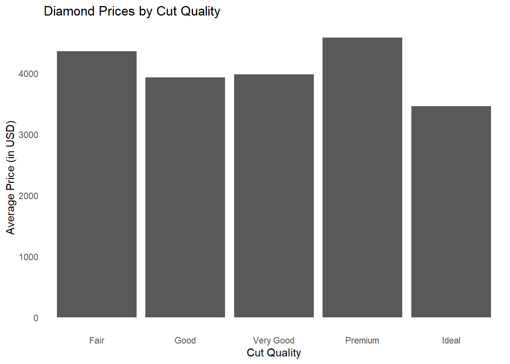
Bar charts can contain more than the two required variables. For instance, this bar chart displays the price of diamonds by cut quality (ordinal) and color clarity (ordinal), and is technically called a grouped bar chart. We make a separate bar for each combination of cut and clarity. The bars are grouped together based on their cut, and put in order of their clarity. The groups are also in order of cut quality. Notice that clarity is encoded two ways: with bar position and with color. The addition of color means that we can avoid printing the label for each clarity over and over again, which would add a lot of clutter to the graph.
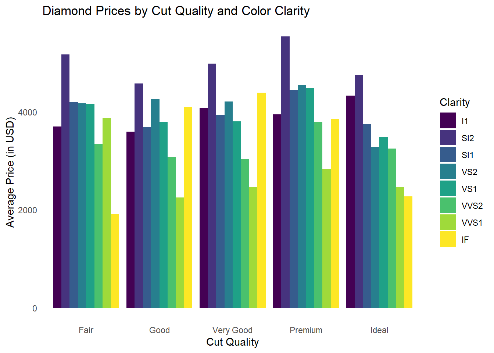
Another common variant of a bar chart is the stacked bar chart. Like the grouped bar chart, it also requires multiple categorical variables and one continuous variable. Using the same data, we can use a stacked bar chart to examine how often each clarity of diamond is cut into each quality grade. In this case, we are simply counting the number of times each combination appears and using that as our continuous variable.
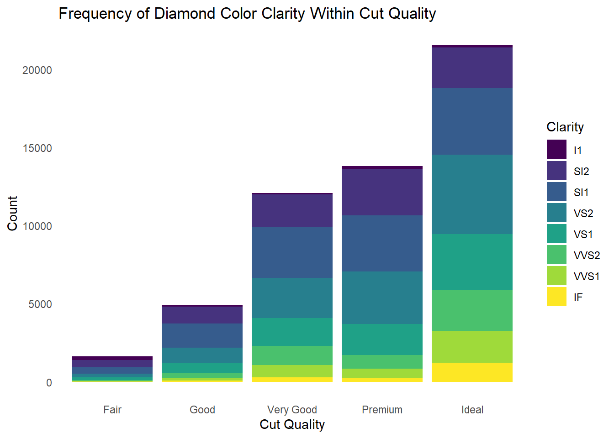
This type of chart emphasizes how many diamonds are in each cut quality, but the differing total sizes makes it more difficult to identify the proportions of clarity within each cut. We can change the emphasis with a “100% stacked bar chart,” which makes it much easier to see the proportions within each group, but hides the total size of each group. Let’s take a look: 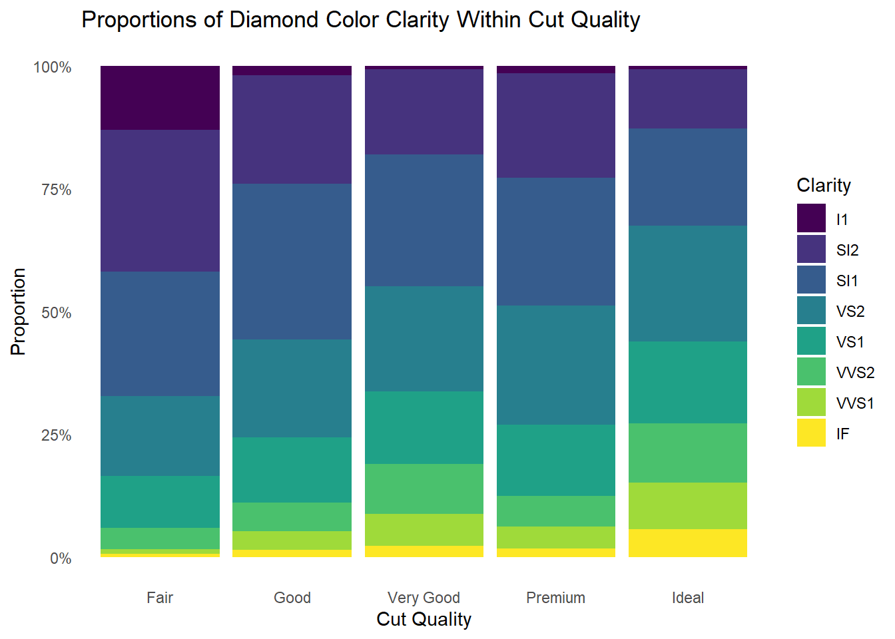
4.1.2 Marimekko Charts
Marimekko charts are similar to bar charts, but require two continuous variables instead of just one, and still require (at least) one categorical variable. At its simplest, a Marimekko chart is a bar chart that also encodes one continuous variable into the width of each bar, rather than keeping them consistent widths. Take a look at this example to see how we can use two continuous variables in a bar chart: 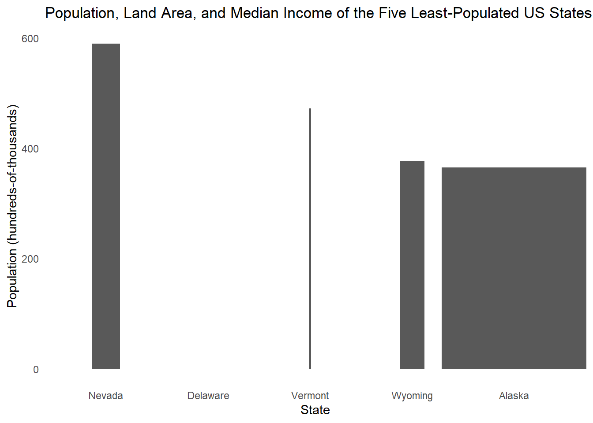
This makes it easy for your viewers to infer a third variable (population density) from the display. For instance, it becomes immediately obvious that Delaware is the most densely populated state while Alaksa is the least.
Just for fun, let’s also encode a third continuous variable into this graph. We’ll encode the median per-capita-income into the color of each bar: 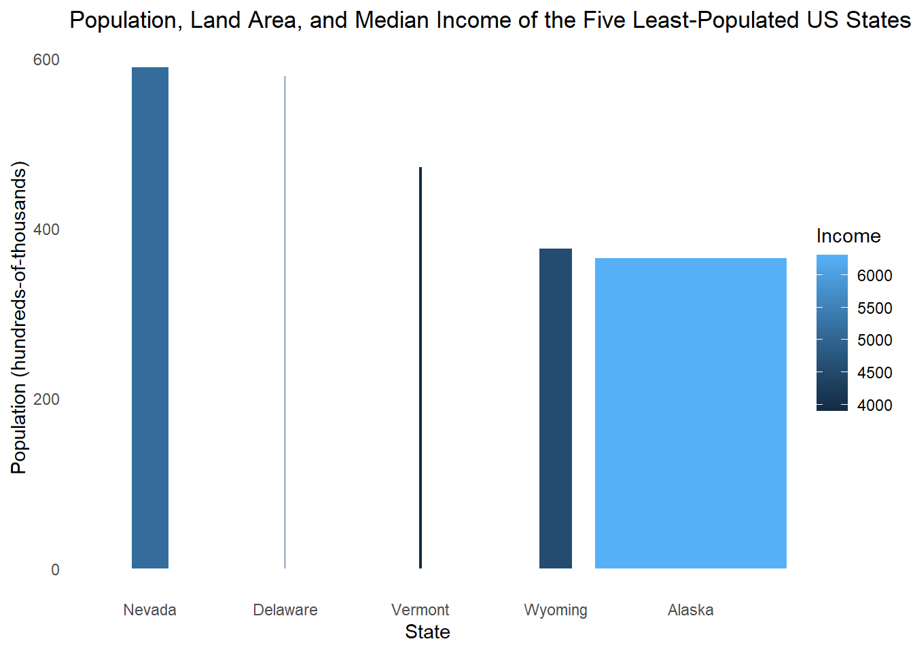
While it’s relatively easy to create a graphic like this, it may not be wise. It is probably too much information for a viewer to readily receive and interpret, thus slowing down their ability to identify important insights or generating new questions.
4.1.3 Heatmaps
Heatmaps are usually used to quickly identify “high” and “low” values by using “hotter” and “cooler” colors. They require at least one categorical and one continuous variable, but very often use two categorical variables. Sometimes the frequency count of each combination of categorical variables acts as the continuous variable, like this example showing how frequently diamonds of a given clarity are cut to a given quality: 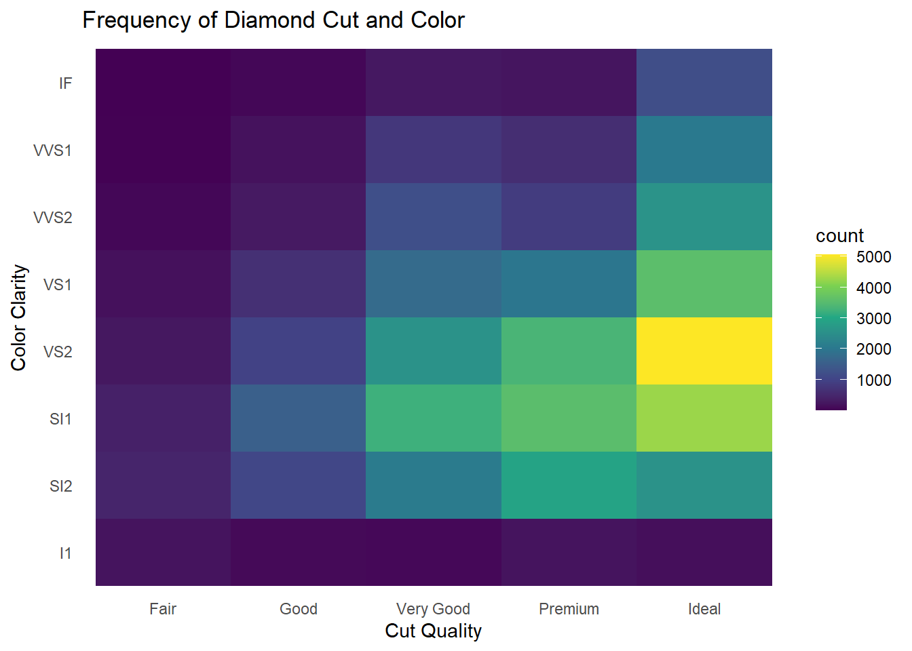
Here, the frequency count of each combination is encoded into the color of each square. The large contrast in colors make it immediately clear that the most frequently occurring combination is “Ideal” and “VS2” diamonds.
4.1.4 Radar Charts
Radar charts are a great way to plot several categorical variables, potentially across several groups, each with a corresponding continuous value. Imagine we have a table of a student’s grades in several classes:
| Student ID | Class |
|---|---|
| 123 | Business |
| 123 | Psychology |
| 123 | English |
| 123 | Math |
| 123 | Science |
We could encode each class in a different location around a circular axis, and then encode each grade with a dot somewhere along the length of the axis. When we connect the dots and fill in the area, it looks like this:
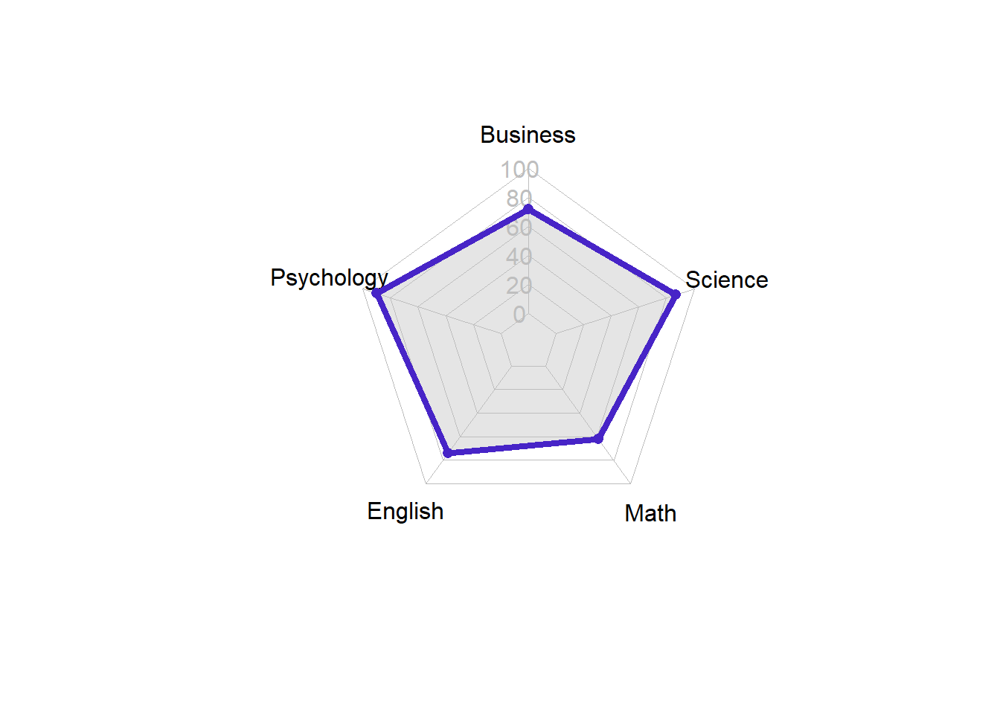
These charts have a variety of other names such as polar charts, web charts, spider charts.
4.1.5 Dot Plots
Dot plots are simple to understand and very flexible with the types of data they accept. At its simplest, they require one continuous variable and one categorical variable with at least two levels (i.e., options).
Let’s plot the median incomes (in 1975) for two states in the USA: 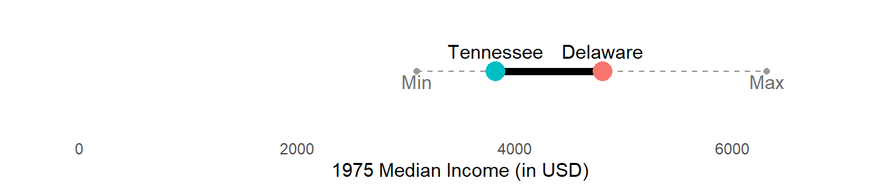
4.1.6 Gauge and Bullet Charts
4.1.7 Waterfall Charts
4.2 Time-Series Graphics
4.2.1 Waterfall Charts (again)
4.2.2 Line Charts
4.2.3 Area Charts
4.2.4 Gantt Charts
4.3 Statistical/Distribution Insights
4.3.1 Histograms
4.3.2 Box Plots
4.3.3 Violin Charts
4.3.4 Rainclouds
4.3.5 Candlestick Charts
4.3.6 Stem-and-Leaf Plots
4.3.7 Principal Components
4.3.8 Scree Plots
4.3.9 Multivariate Plots
Not sure this is a thing, but I want to look into it
4.4 Geographic and Spatial Data
4.4.1 Choropleth
4.4.2 Dot Density
4.5 Relationships Between Variables
4.5.1 Scatterplots
Scatterplots are another fundamental type of chart to understand. At their simplest, they display the information of two continuous variables. Critically, the values of each variable are displayed as pairs, meaning that each set of values should belong to the same unitA “unit” can be anything: a person, a business, a location, etc. Each pair of continuous values must belong to the same unit.
Here’s a simple scatterplot of employee attitudes about their work department. Each dot represents a different department (the unit), and the values of each variable are encoded in the position of the dot. The value of each variable is the average number of favorable responses employees within each department gave when asked a particular question, such as, “How do you feel about your opportunities to advance within this department? That variable is encoded in the vertical position of each dot. That is, dots with a higher position indicate more favorable responses than dots with a lower position. The other variable is encoded in the horizontal position of each dot, with higher values being indicated by a position farther to the right.
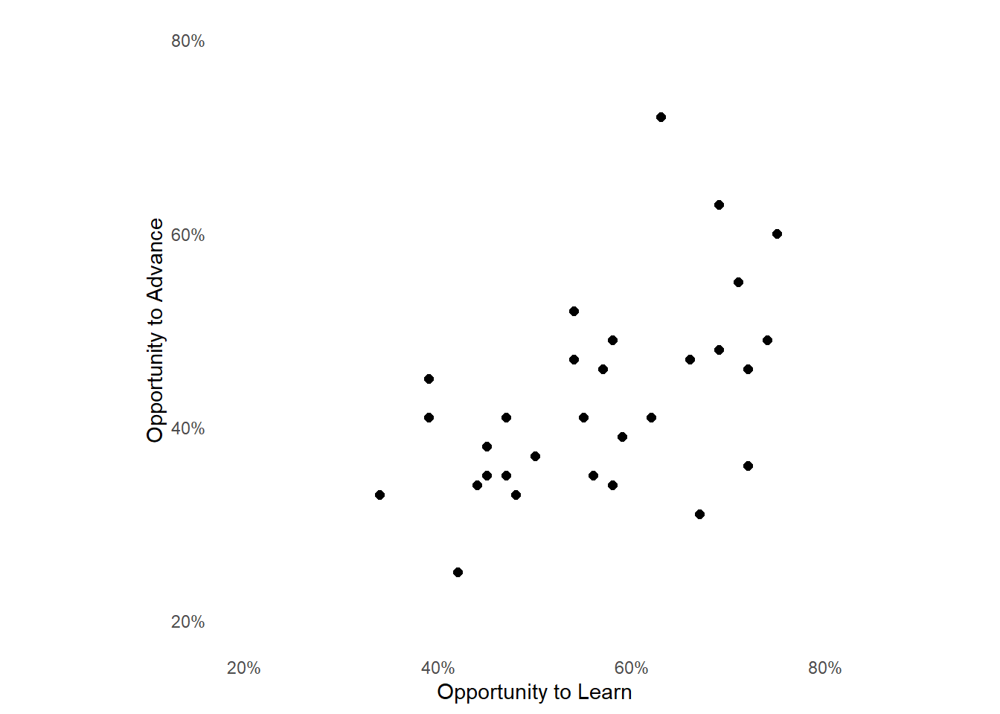
This is the first “relational” plot because it is primarily intended to examine for the presence of a relationship between the two chosen variables. In this example, someone could argue that employees who are able to learn more skills are more valuable to their employer and are thus more likely to receive a promotion. If you agree with that logic, then you’d expect to see a relationship between these variables, such that departments that are high in one variable are probably high in the other.
In fact, this relationship can be emphasized by adding a “line of best fit” through the dots, like this:
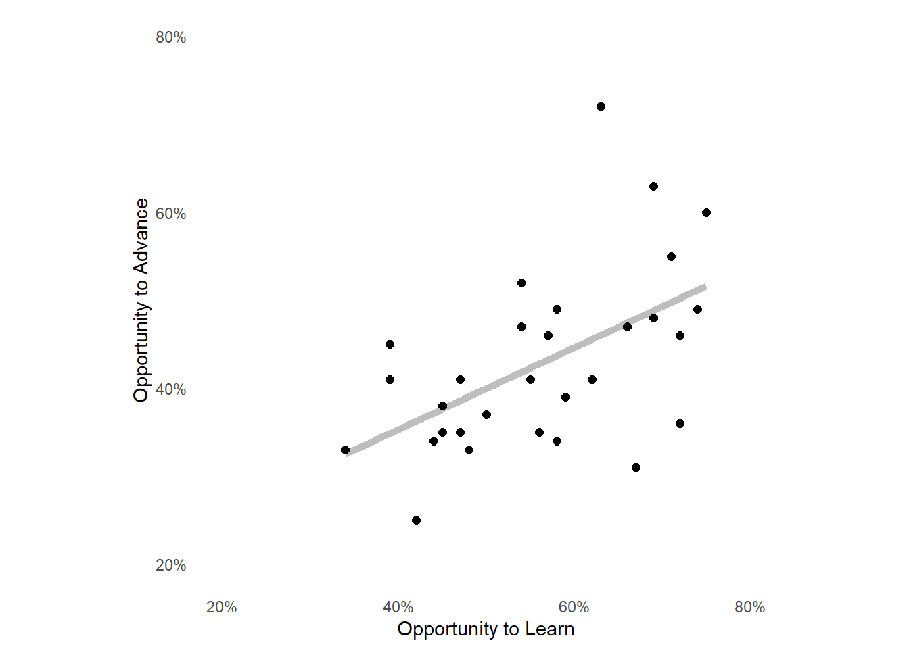
This line has been drawn in such a way that it is as close as possible to every dot in the display. It trends upwards and to the right, indicating that as one variable increases you should also expect the other to increase. There are a significantget it? number of statistical methods to identify whether the portrayed relationship is truly their or is simply spuriousmeaning that it’s random or without merit.
Scatterplots can easily accomodate the addition of a categorical variable to investigate relationships across groups. Take a look at this graph showing the relationship between petal length and sepal length of irises, a type of flower:
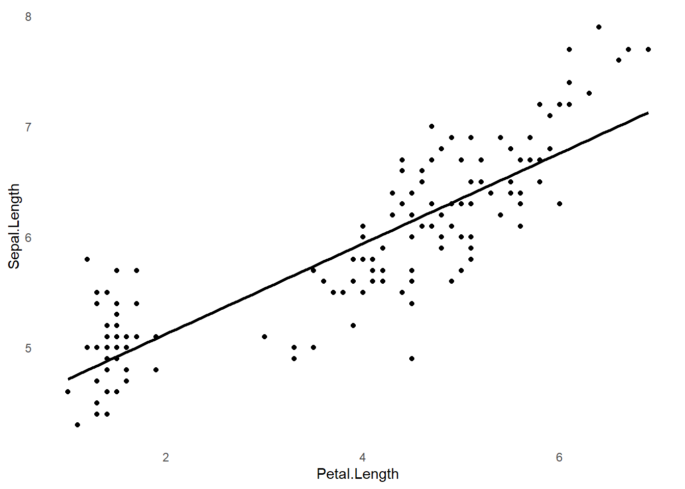
This makes it clear that there’s a relationship between the two features, but let’s see what happens when we encode the sub-species of each plant into the dot’s colors:
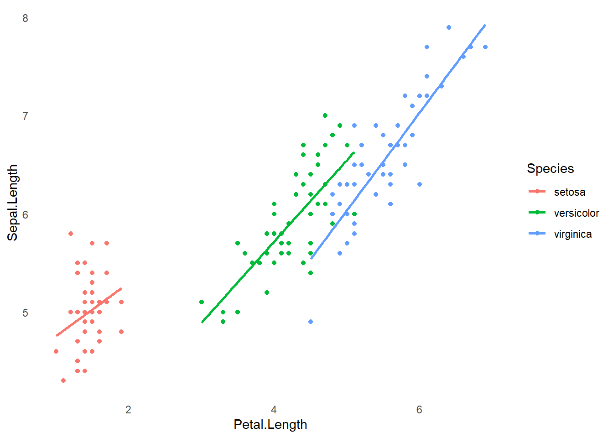
By the way, if you’re like me and don’t remember anything from your biology classes, here’s what petals and sepals are:

4.5.2 Bubble Charts
Bubble charts are a variant of the scatterplot that incorporate a third continuous variable, which is encoded into the size of each dot. Here’s a bubble chart primarily showing the illiteracy and high school graduation rates in each state in the USA. The median income is encoded into the size of each dot, such that states with higher incomes are shown with larger dots:
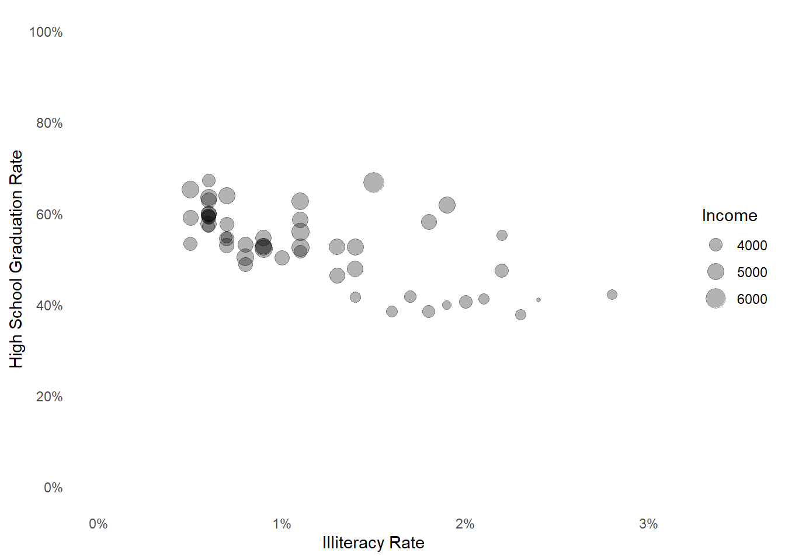
When using multiple encodings to display multiple variables, it becomes critically important to consider which variables to encode with each visual property. Why did I choose to make the area of each dot proportional to income, and not the illiteracy rates? Why did I choose to use area rather than a color gradient? These questions are primarily answered by the information contained in {chapter on encoding precision}.
4.5.3 Correlation Matrix
4.5.4 Parallel Coordinates
4.6 Flows and Nested Data
4.6.1 Pie Charts
4.6.2 Funnel/Pyramid Charts
4.6.3 Treemap
4.6.4 Chord/Arc Diagram
Chord and Arc diagrams are one type of network diagram, which will be further explored soon. These diagrams really require only two categorical variables, but they must be paired together so that one variable is the source and to the other’s target or destination. For instance, if you were to map your movements in the day, it might look something like this:
| Source | Target |
|---|---|
| Home | School |
| School | Home |
| Home | Gym |
| Gym | Home |
| Home | Restaurant |
| Restaurant | Movie |
| Movie | Home |
Notice that these might be in a chronological order, but that the ordering of stops isn’t displayed in this chord diagram of your movements:
This can be confusing to interpret at first, but it’s a clever way of showing the movements. Each location (a source or target) is given a bar around the edge of a circle. Then, chords are drawn between locations that were connected by your movements at some point. The width of the chord is proportional to the number of connections between the two locations. If the two ends of a chord are equal widths, this tells you that those locations were the source and target an equal number of times. If a chord is wider at one end than the other, then the location at the wider end was the source more often than the target.